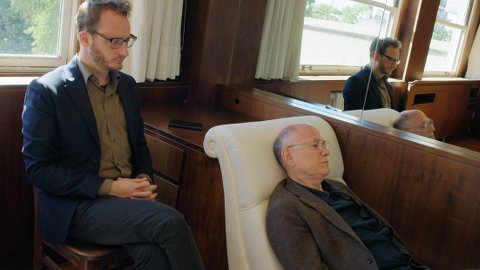

Filmmaker IN FOCUS: Heinz Emigholz
Website von Heinz Emigholz
Über Heinz Emigholz' Zyklus STREETSCAPES
Hatte er nicht gesagt, er wolle keine Architekturfilme mehr
machen? Von nun an nur noch Spielfilme? Zumindest gönnt sich Heinz
Emigholz, der seit vier Jahren pensioniert ist, ein wenig mehr
Verspieltheit als früher, was sich schon in The Airstrip – Aufbruch
der Moderne, Teil III (2014) angekündigt hatte. Emigholz hat einen
unverwechselbaren Stil, er ist Meister der verkanteten
Kadrierungen, stiller Schein-Standbilder und wortloser Etüden zu
„Photographie und jenseits“, wie sein größter Werkzyklus im
Untertitel heißt. Emigholz hat dem Architekturfilm ein neues
ästhetisches und epistemologisches Fundament gegeben. Seine
filmischen Monographien zu bedeutenden Baumeistern (darunter Auguste
Perret, Pier Luigi Nervi, Adolf Loos, Rudolph Schindler, Bruce Goff)
setzen die Bauten ins Verhältnis zum Sehen, wobei dem Blick eine
„komponierende Kraft“ (Emigholz) zukommt.
Für sein Œuvre reiste Emigholz um die ganze Welt. Maßgeblich ist
die Strenge, die er in seinen unbewegten Bildern walten lässt – auf
eine Kamerafahrt oder einen Schwenk kann man bei ihm kaum hoffen
–, aber die Strenge verweigert sich dem rechten Winkel. Seine
verhältnismäßig schnell geschnittenen Ansichten von Gebäuden und
Räumen zeigen keine Menschen, und wenn doch, dann nur, wenn sie
funktional zum Gebäude gehören, wie Arbeiter zu einer Fabrikhalle.
Rituale der militärischen Welt und der größeren geopolitischen Zusammenhänge finden bereits 2001 in TATTOO die Aufmerksamkeit der Künstlerin, wenn sie die Exerzitien eines Regiments inmitten der unberührten Natur als absurden militärischen Drill zeigt, dessen einzige Zeugen die Vögel und Bäume sind.
Tiere durchqueren oder durchfliegen immer wieder seine Aufnahmen, als wollten sie die Raumbild-Diagonalen noch einmal neu vermessen. Und immer wieder schieben sich Bäume und Sträucher vor die Architektur, als Zeugen der Dreidimensionalität der Welt. Auch die Straßen der Städte werden eingefangen; Emigholz scheut sich nicht, neben der erhabenen Schönheit der Architektur auch die pulsierende Hässlichkeit, den Schmutz und die Armut sowie die Banalität der Großstädte zu zeigen. Ob dies schon Dekonstruktion der Erhabenheit bedeutet, sei dahingestellt, zeigt aber bei aller Menschenleere seiner Filme ein profundes Interesse am sozialen Gefüge.
Sein neuestes Werk STREETSCAPES, das sich ebenfalls dem Zyklus „Photographie und jenseits“ zuordnet, besteht aus vier Kapiteln: 2+2=22 [The Alphabet], Bickels [Socialism], Streetscapes [Dialogue] und Dieste [Uruguay]. Das zweite und vierte Kapitel folgen dem Werk, wie wir es von Emigholz bereits kennen. Die beiden anderen, jetzt bei UNDERDOX präsentierten Kapitel transzendieren die Architekturfilme selbst noch einmal, indem sie eine neue Dynamik zulassen: Musik und das gesprochene Wort. (Dunja Bialas)
2+2=22 [The Alphabet]
Eine Art Remake von Jean-Luc Godards ONE PLUS ONE (1968). Nicht die Rolling Stones sind hier zu sehen, sondern die Düsseldorfer Band Kreidler bei der Einspielung ihres Albums „ABC“ . Das Studio befindet sich in der georgischen Hauptstadt Tiflis, die in einer Parallelmontage zu den Studioszenen in der typischen Emigholz’schen Weise porträtiert wird.
freitag 6 okt 18.30 uhr filmmuseum münchen
Streetscapes
[Dialogue]
Der Regisseur als Schauspieler und Psychoanalytiker seiner Selbst. Der Argentinier Jonathan Perel hat einen streng mathematischen Film über Sozialsiedlungen aus den Jahren der Diktatur gemacht, Toponimia (10. UX). Derart mit Emigholz im Geiste verwandt, spielt er einen Psychoanalytiker, der wiederum einen Regisseur (in der Rolle: John Erdman) aus einer schweren Sinn- und Schaffenskrise begleitet. All dies trägt sich in den Häusern, auf den Terrassen oder vor den Fassaden der uruguayischen Architektur von Eladio Dieste und Julio Vilamajó zu.
samstag 7 okt 18.30 uhr filmmuseum münchen
